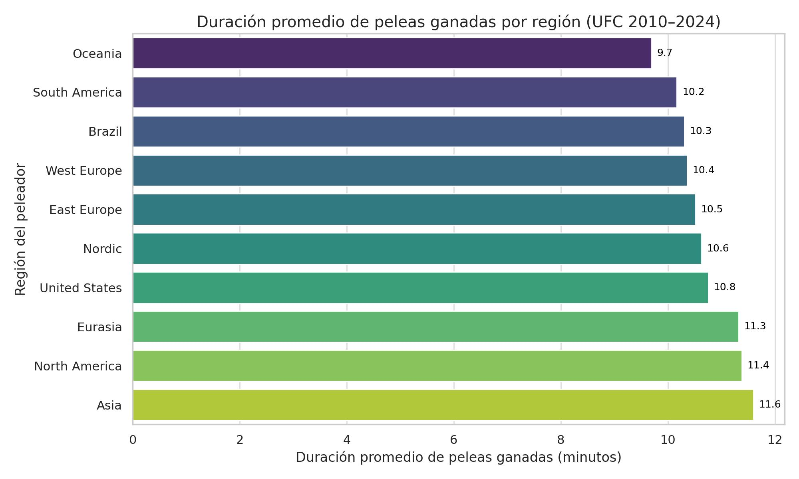

El origen
En octubre de 2019, más de 57.000 aficionados abarrotaron un estadio en Melbourne para presenciar UFC 243: el nigeriano-neozelandés Israel Adesanya destronó al héroe local Robert Whittaker y se coronó campeón mundial de peso mediano. Aquella noche histórica en Australia evidenció cuánto había cambiado la UFC desde sus inicios: ya no era un espectáculo concentrado en Las Vegas o Río de Janeiro, sino un fenómeno verdaderamente global. La imagen de Adesanya, nacido en Nigeria, alzando el cinturón ante un público récord en Oceanía simbolizó la internacionalización del deporte. Una década atrás, la idea de un campeón africano levantando un título de UFC en el otro extremo del mundo habría parecido sacada de una novela de ciencia ficción deportiva. Hoy es una realidad que sigue expandiendo las fronteras del octágono.
Origen de los peleadores de la UFC
La expansión global de la UFC
La Ultimate Fighting Championship nació en 1993 como un torneo de vale tudo estadounidense-brasileño, protagonizado por los Gracie y peleadores norteamericanos, pero en los últimos años se ha transformado en una liga planetaria. Los datos lo confirman: antes de 2010 la UFC solo había organizado eventos en 7 países fuera de Estados Unidos; desde entonces ha visitado 19 países distintos, con la meta declarada de Dana White de “abrir el deporte en todas partes”. Esta agresiva expansión internacional no solo llevó el show a nuevos mercados, sino que atrajo a talento de todos los rincones. En 2010, el 65% de los peleadores que competían en UFC eran estadounidenses (seguido de un buen contingente brasileño); para 2021, esa proporción de estadounidenses había bajado a cerca del 50%, incorporando una mezcla mucho más rica de nacionalidades. De hecho, en 2021 se llegaron a contabilizar atletas de más de 60 países diferentes en las carteleras de UFC, desde potencias clásicas como EE.UU. y Brasil hasta lugares tan inesperados como Angola o Afganistán, reflejo de que la búsqueda de campeones se había vuelto verdaderamente global.
Evolución del número acumulado de peleadores únicos provenientes de distintas regiones del mundo que han competido en UFC entre 2010 y 2021 (según datos recopilados del Ultimate UFC Dataset). La presencia de Estados Unidos (línea gris oscura) sigue al tope, pero otras regiones exhiben crecimientos notables: Brasil (línea azul) incrementa sostenidamente su aporte de luchadores, y regiones como Europa Occidental, Europa del Este o Eurasia (ex repúblicas soviéticas, línea verde) pasaron de casi no tener representantes a contar con decenas de peleadores en la élite. La internacionalización del roster de UFC es innegable a lo largo de la década.
La diversificación del talento tuvo un impacto inmediato en la cima del deporte. Hacia 2021, 10 de los 12 campeones de UFC habían nacido fuera de Estados Unidos. América del Norte ya no monopolizaba todos los cinturones: la hegemonía se repartía entre campeones de África, Europa, Oceanía, Sudamérica y Asia. Un ejemplo contundente se vivió a inicios de 2021, cuando tres títulos pertenecían simultáneamente a peleadores africanos: el camerunés Francis Ngannou reinaba como campeón de peso pesado, acompañado por dos nigerianos, Israel Adesanya (peso mediano) y Kamaru Usman (peso wélter). Sus victorias desataron celebraciones multitudinarias en sus países natales –Ngannou paseó su cinturón por las calles de Batié (Camerún) entre una multitud eufórica, Usman y Adesanya fueron recibidos como héroes nacionales en Nigeria–, escenas impensables en los primeros años del siglo. En Asia, la historia fue similar: en 2019 la china Zhang Weili noqueó a Jessica Andrade y se convirtió en la primera campeona nacida en China en la historia de UFC. Aquel triunfo, logrado frente a su público en Shenzhen, inspiró a una nueva generación de aficionados en Extremo Oriente y confirmó que el fenómeno de las MMA había echado raíces en todas las latitudes del planeta.
En paralelo, la UFC fue adaptándose a estos nuevos mercados: abrió centros de entrenamiento de alto rendimiento en Shanghai y preparó el desembarco en África con institutos deportivos, reconociendo que “el mejor talento aún está allá afuera, sin descubrir”, como señaló Ngannou. La promoción incluso logró que países tradicionalmente reacios a las MMA cambiaran de postura –Francia legalizó el deporte en 2020 tras años de lobby, lo que permitió que un parisino, Ciryl Gane, se alzara como el primer campeón nacido en suelo francés en 2021–. En palabras del periodista Marc Raimondi de ESPN, la UFC se ha convertido en uno de los deportes de más rápido crecimiento a nivel mundial, alimentado por esta diversidad de culturas combativas que ahora convergen en el octágono. La empresa pasó de ser una curiosidad norteamericana a “una compañía global de medios deportivos premium”, con eventos retransmitidos en 165 países y en 40 idiomas.
Duración promedio de peleas ganadas por región (2010–2024)
Este gráfico revela cuánto duran, en promedio, las peleas ganadas por peleadores de distintas regiones. Asia, Norteamérica y Eurasia encabezan con las duraciones más largas, lo que sugiere estilos más estratégicos o basados en el desgaste. En cambio, Oceanía, Sudamérica y Brasil tienden a cerrar sus peleas más rápido, reflejando quizás una mayor capacidad de finalización temprana.
Estilos de combate y orígenes geográficos
El intercambio cultural no solo se aprecia en las banderas de los peleadores, sino también dentro de la jaula en la forma de pelear. Cada región aportó sus tradiciones marciales y enfoques estratégicos, enriqueciendo el abanico de estilos en la UFC. Brasil, cuna del Jiu-Jitsu brasileño, ha dejado una huella indeleble: los luchadores brasileños sobresalen en las llaves y estrangulaciones, al punto que el récord histórico de victorias por sumisión pertenece a un brasileño (Charles Do Bronx Oliveira, con 16 sumisiones conseguidas en UFC). No sorprende entonces que movimientos clásicos como el mata león (rear-naked choke) o el armbar sean parte del arsenal típico de los brasileños desde los inicios del MMA moderno. La influencia de Brasil en el juego de piso llevó a innumerables finales antes del límite a lo largo de la última década, revalidando la famosa máxima de Royce Gracie: “si no te rindes, te duermes”.
En contraste, Estados Unidos –que todavía representa la mayor base de atletas en UFC– destaca por su poder de nocaut y por la frecuencia de combates decididos en las tarjetas de los jueces. La escuela norteamericana combina tradición de lucha olímpica (wrestling) con disciplinas de striking como boxeo y kickboxing, produciendo peleadores completos capaces tanto de noquear de pie como de controlar a sus rivales en el suelo durante tres asaltos. Esta versatilidad se refleja en las estadísticas: históricamente los estadounidenses acumulan la mayor cantidad de victorias por KO/TKO en UFC, y también lideran en cantidad de triunfos por decisión (muchos de ellos gracias a su dominio de la lucha y el ground and pound). Figuras estadounidenses como Derrick Lewis –poseedor del récord de nocauts en UFC, con 15 victorias antes del límite por golpeo– ejemplifican esa pegada temible, mientras que leyendas de la lucha colegial como Matt Hughes o Daniel Cormier mostraron cómo un buen wrestler puede neutralizar a los atacantes más feroces y llevar la pelea hasta el campanazo final.
Distribución de los métodos de victoria en UFC (2010–2021) según la región de origen del peleador ganador. Cada barra representa el número de peleas ganadas por cada tipo de finalización: nocaut técnico/KO (rojo), sumisión (azul), decisión unánime (verde), decisión dividida (morado), etc., acumuladas por luchadores de distintas regiones del mundo. Como se observa, los peleadores de Estados Unidos (barras verdes más altas en KO/TKO y U-DEC) dominan en cantidad de nocauts y victorias por decisión, seguidos por los de Brasil (barras naranjas destacadas en SUB), que lideran en sumisiones. En cambio, regiones como Eurasia (ej. Rusia y ex repúblicas soviéticas) y Europa del Este exhiben una proporción mayor de triunfos por decisión (unánime o dividida) frente a sus números de nocauts –una señal de su enfoque más controlado y de desgaste, posiblemente influido por sus raíces en la lucha y el sambo soviético. En resumen, el “ADN” marcial de cada país deja ver su impronta en cómo se ganan las peleas en la jaula.
Efectivamente, regiones como Eurasia y el este de Europa han aportado un estilo de combate basado en la presión constante, el grappling sofocante y la paciencia táctica, privilegiando el dominio posicional sobre la búsqueda desesperada del nocaut. El caso más emblemático es el de Dagestán, región del Cáucaso ruso: el primer campeón daguestaní de UFC, Khabib Nurmagomedov, utilizó magistralmente su base de lucha estilo sambo para conquistar el título de peso ligero, llegando a retirarse invicto tras 29 peleas gracias a su inquebrantable control sobre los oponentes. Khabib y otros talentos de la ex Unión Soviética demostraron que un plan de juego paciente, fundamentado en la lucha libre, puede desarmar incluso a los strikers más explosivos. Por ello, no es coincidencia que muchos peleadores provenientes de Rusia, Georgia o Kazajistán sumen más victorias por decisión que por nocaut en sus carreras, alargando las peleas hasta el límite mientras desgastan gradualmente a sus rivales. Este estilo contrasta con el de, por ejemplo, los artistas del Muay Thai y taekwondo de Asia Oriental, quienes suelen buscar golpes espectaculares (patadas giratorias, rodillazos voladores) heredados de sus disciplinas de origen; o con el de los noqueadores de África Occidental, área de origen de campeones como Ngannou, cuya potencia física excepcional les ha permitido definir combates de un solo golpe.
Por supuesto, las generalizaciones tienen sus excepciones. La belleza de la UFC actual radica en que cada peleador es un cruce de influencias: así como un brasileño puede poseer un boxeo temible (véase José Aldo, legendario striker de Río de Janeiro), un estadounidense puede ser maestro del BJJ (como Tony Ferguson, entrenado en 10th Planet Jiu-Jitsu) o un europeo puede sobresalir por sus nocauts relampagueantes (el caso del británico Michael Bisping, famoso por su striking técnico). Sin embargo, en el agregado de miles de combates, sí emergen patrones que vinculan el lugar de origen con cierta filosofía de pelea. La diversidad geográfica se ha traducido en diversidad técnica: cada cultura marcial trae su especialidad y la pone a prueba en el laboratorio global del octágono.
Finalizaciones según la región del peleador ganador (2010–2021)

Esta visualización compara los métodos de victoria en UFC por región del peleador ganador. Brasil lidera en sumisiones, mientras que Estados Unidos domina en nocauts y decisiones. Eurasia y Europa del Este exhiben un enfoque más estratégico con alta proporción de decisiones, reflejando su herencia en lucha y sambo. Cada región revela una “filosofía de combate” distinta dentro del octágono.
Un deporte, muchas banderas, infinitos estilos
En el transcurso de poco más de diez años, la UFC pasó de ser un duelo casi bipartito entre Estados Unidos y Brasil a un vibrante mosaico multicolor donde coexisten decenas de banderas. Esa internacionalización no es un mero dato anecdótico, sino que ha cambiado la esencia misma de las peleas. Hoy, en una misma velada podemos ver a un campeón de kickboxing de Nueva Zelanda enfrentar a un experto en sambo de Dagestán, seguido por un duelo entre una prodigio del jiu-jitsu paulista y una striker surgida del karate japonés. Cada combate se ha vuelto un choque de escuelas, de tradiciones y de estrategias forjadas en lugares muy distintos entre sí.
Para la UFC, esta evolución ha sido sumamente positiva. Nuevos mercados significan nuevos fanáticos y mayores audiencias, pero también un nivel competitivo más alto. La ola global ha obligado a todos los atletas a elevar su juego: ya no basta con brillar en una sola faceta, porque siempre habrá un especialista de algún rincón del mundo dispuesto a explotar la debilidad de turno. Como señala un análisis, con el tiempo ha habido una ligera disminución en la proporción de victorias por KO y sumisión, y un aumento de las decisiones, indicio de que las peleas son cada vez más disputadas y técnicamente parejas. Los peleadores son más completos que nunca, producto de ese crisol de estilos en el que todos aprenden de todos.
El fenómeno también habla de un cambio cultural: las artes marciales mixtas se han normalizado globalmente. Donde antes solo Estados Unidos, Brasil y Japón tenían ligas fuertes, ahora surgieron potencias en sitios insospechados. En América Latina, por ejemplo, países como Chile, Perú o México han visto despegar el interés por las MMA gracias a las hazañas de sus representantes en UFC; Europa del Este vive una efervescencia de academias de combate impulsada por los éxitos de sus campeones; China y el Sureste Asiático ya cuentan con programas televisivos y estrellas locales movilizando a millones de seguidores. La UFC ha sabido capitalizar esta tendencia, creando eventos a medida: desde carteleras con puros talentos locales (como en UFC Londres o UFC París) hasta Performance Institutes que nutren a la próxima generación en Shanghái, México DF o el planificado centro en África.
Al final, los números y las visualizaciones cuentan una historia de convergencia global. La hipótesis que guiaba este proyecto era clara: “la UFC se ha globalizado y eso ha diversificado tanto el origen de sus peleadores como los desenlaces de sus combates”. Los hechos la respaldan con creces. Hemos visto cómo el origen geográfico de un luchador puede influir en su estilo de pelea y en cómo finaliza –o gana– sus compromisos, revelando patrones fascinantes. Pero también hemos constatado que ninguno de esos patrones está escrito en piedra: en la UFC del siglo XXI, cualquier peleador, sin importar de dónde venga, puede desarrollar las herramientas para vencer a cualquier oponente.
La metamorfosis de la UFC en esta última década ha sido notable. De aquel torneo casi clandestino de los 90 con un puñado de participantes, pasó a ser un circo global multimillonario donde combate lo mejor de cada continente. Y lo más emocionante es que este proceso sigue en marcha. “El mejor talento del mundo quizás sigue allá afuera, sin descubrir”, decía Ngannou refiriéndose a África, y lo mismo podría aplicarse a tantos países donde las MMA recién están despegando. Cada nuevo prospecto internacional que firma con UFC trae consigo no solo sus sueños, sino el bagaje de una cultura de combate distinta. Esa es la nueva esencia de la UFC: una liga mundial donde cada pelea es un choque de mundos en miniatura. El octágono ya no pertenece a un solo país –es territorio de todos. Y en esa pluralidad reside la riqueza y el futuro de este deporte.
En palabras del propio Dana White, la misión de la UFC es llevar las MMA a cada rincón: “Our goal is to open the sport everywhere”. Los últimos diez años han sido un paso gigante hacia ese objetivo. Hoy podemos decir que, efectivamente, el mundo entero ha entrado al octágono, y el resultado ha sido una explosión de estilos, pasiones e historias que hacen de la UFC un fenómeno deportivo sin equivalente. Las visualizaciones y análisis presentados aquí no solo muestran datos fríos, sino el pulso de una transformación cultural: la de un deporte que encontró su camino para ser universal, sin perder por ello la esencia combativa que lo hace único.
Evolución de los métodos de finalización en UFC (2010–2024)

A lo largo de los años, las decisiones se han convertido en el método más común de victoria en UFC, superando a los nocauts y las sumisiones. Esto indica un aumento en la competitividad técnica, donde los peleadores deben controlar el combate durante tres o cinco asaltos completos para imponerse. La caída de los nocauts tras 2020 y el leve descenso de sumisiones también refuerzan la idea de un deporte más parejo, donde finalizar ya no es tan sencillo.